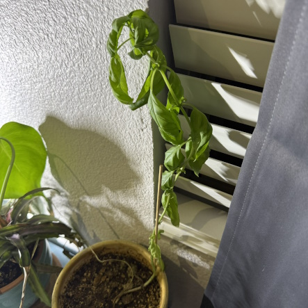
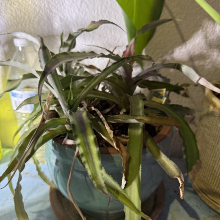
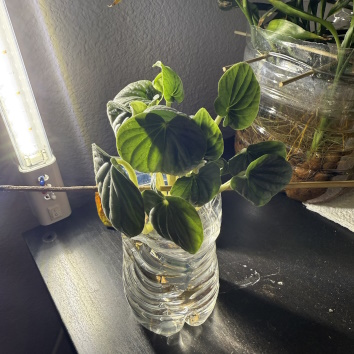
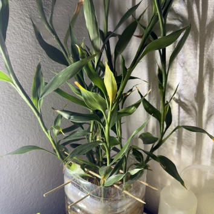
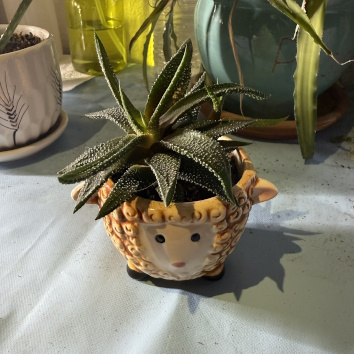
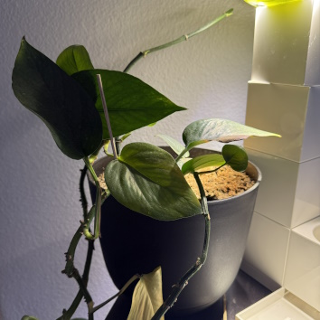
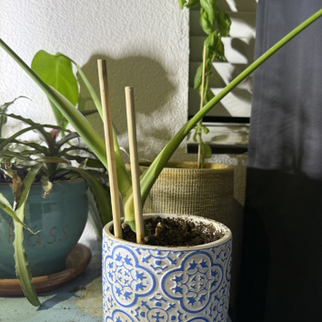
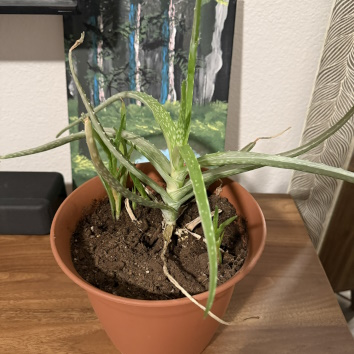

Bahseal
I have had my basil plant since June 26,2024 when I started it from just a seed. Since then its grown to about 8 inches total in length.
It had a sibling basil growing along side it, when I moved recently it wilted away from slight neglect. I aim to keep this basil until it dies.
If it dies, I would plant a new basil in its place to continue to have fresh basil which I have already used a few times when cooking.

Buddy
Buddy has been around with me since the beginning. This was the first plant I recieved as a gift from my finace. I've had this one for about 3 years now and have changed it to a new pot.
I wish i could keep it in the original pot since it has a smilely face on it, but it simply outgrew that pot. I still have the plant retain the name buddy although its namesake is currently
collecting dust in my cabinet.

Lovely
Lovely has been around with me for about 2 years now. It has had its ups and downs, but it still persists today all be it inside of a water bottle now. Unfortunately, the plant has been
having issues and is currently on the mend. I'm hoping the plant will return to full health and so I can repot it back into its heart themed pot home.

Lucky
Lucky the multiple pieces of bamboo. I had a hard time with these bamboo stalks in the beginning and nearly lost each one of them. However, I managed to retain several cut off pieces from 3-5
inches long each. Now the largest one is about 1.5-2 feet in lenth prospering in half a one gallon jug! I have yet to find a more appeasing looking pot for them, so for now they are enjoying their
fishbowl.

Shaun
"Shaun the sheep" is one of my newer additions to the "garden". It was initially a gift to my fiance, but after a job change I took it under my belt to keep alive. It is a very slow growing
plant, but it is very fun to look at.

Starlord
This pothos, nicknamed starlord after my friend that gave me a short propogated piece of his pothos, has been with me since Januaury of 2023. This has been a fun plant to have and grow as
it has gone crazy from time to time. It is an easy plant to grow and thus has probably grown up to 6 feet in total since I have had it! Unfortunately, it does not show off the 6 feet since
it easily becomes unmanagable and loves its light.

Starlord Jr.
Starlord Jr. is another plant gifted to me by my friend, thus its name as junior. It is a different plant altogether, but I enjoyed the name. This is my most recent aquisition, but it recently
sprouted a new leaf after it took to its pot well! I'm excited to see where this one grows.

Waloe
"Waloe the aloe" was my first thought when I recieved this plant. Its not exactly unique or amazing, but I thought it was fun. This aloe has gone crazy sprouting multiple new pieces of new aloes
ready to spur off into new plants entirely. I have propogated two more aloes from the one and have the opportunity to create 4-5 more from what are currently growing in the main aloe pot.
It is fun that you can propogate this plant easily because it makes for a great gift!